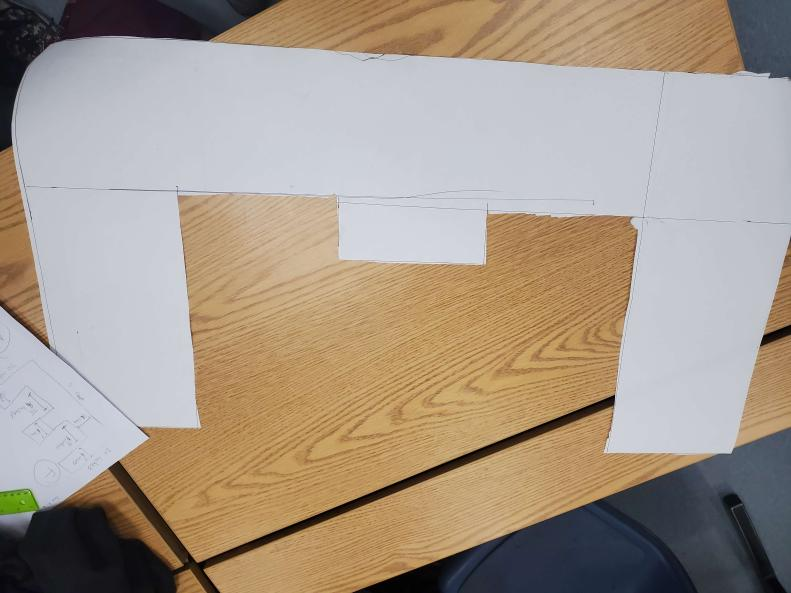

The ultimate objective of this course is nothing short of a transformation into an alpha male on a scale akin to the legendary Ethan Chang.
8/20/23 - This is my 1st journal entry!
Today, I ventured into the realm of conversing with the formidable alpha male known as Ethan Chang. The adrenaline surged through my veins like a tempestuous storm, unmatched in its ferocity, marking the inception of my formidable odyssey.
The moment arrived to confront my deepest fears and exhibit my rugged prowess in executing the daring marble challenge. Ethan Chang, a watchful figure in the distance, bore witness as if my failure equaled my demise. In times such as these, there existed no space for faltering, only the stark choice between life and death. However, in the end, none of it truly held significance. It wasn't the individual that met their demise, but rather the collective brotherhood that faced its reckoning together. As it turned out, we all met our fate because our performance was nothing short of abysmal. Fueled by embarrassment, disappointment, and an unparalleled rage, Ethan Chang spared us from our destiny, ensuring my survival to see another week.
9/1/23 - This is my 3rd journal entry!
From the unassuming "I Forgot" website emerged a creation that opened a portal to a world where I could relive profound encounters with the enigmatic warrior, Ethan Chang. His incredible might was demonstrated through the creation of a mere light bulb, yet as its brilliance intensified, darkness shrouded everything. In the obscurity, a luminous, eerie bulb emerged, challenging me to replicate the supernatural spectacle. The task seemed insurmountable, with brilliance blinding reality, strength rendering itself feeble, intelligence verging on foolishness, challenges diminishing to insignificance, and speed agonizingly slowing. This mystical mastery belonged solely to Ethan Chang, a revelation I was privileged to witness. Week 2 end. (This design soon to be implemented bore the unmistakable imprint of the illustrious grand master, Ethan Chang, a luminary whose creative genius knew no bounds)
9/8/23 - This is my 4rth journal entry!
The week was an absolute powerhouse. The sheer audacity of using a Walmart blender fueled an unstoppable fire within me. With unwavering determination, I tackled this website, but it crumbled like a house of cards, a testament to its inherent weakness. And then, seemingly out of nowhere, Ethan Chang emerged and single-handedly hoisted the entire team to the pinnacle of triumph.The contraption he meticulously crafted operates with the precision of quantum physics. The sphere hurtles downward with unrelenting velocity, and in the grand finale, the needle strikes like a sniper, bursting the balloon with pinpoint accuracy. The most arduous challenge lay in contending with this website, and the ultimate lesson of the week was clear: Stand shoulder to shoulder with Ethan Chang for the ultimate display of dominance.
9/22/23 - This is my 5th journal entry!
This day brimmed with a profound sense of nationalism and unwavering patriotism. It marked the long-awaited moment when Ethan Chang, the skilled maestro, and I, the humble apprentice, put our project to the test. A surge of fervent patriotism for our nation coursed through our veins.What I gleaned from this experience was the importance of unwaveringly following Ethan Chang's instructions; deviation led to our ultimate downfall. Though our endeavor ultimately met with failure, it was a valiant struggle, fraught with intense emotions of animosity and trepidation.The lessons we forged together during this arduous journey remain etched in my memory as the most poignant and enduring moments of awe, magnificence, and the battles we faced. Soon, another event will emerge, poised to reshape me profoundly.
9/22/23 - This is my 6th journal entry!

The moment had arrived when the call to arms beckoned us to the battleground of unwavering patriotism, a battle for triumphant victory. Like a paper boat, our resolve was firm, its contours intricately cut into the shape of an unyielding 'E.' The elixir of triumph coursed through our veins, with the great Ethan Chang at my side, a steadfast comrade in the pursuit of glory.Ethan unveiled an unparalleled, awe-inspiring, ultimate, superlative, fabulous, spectacular, incredible, and fantastic idea—a bowl of genius—as our vessel's salvation, propelling it towards the shores of conquest. The waters, however, bore no allegiance to our quest, causing our vessel to falter and succumb to their depths. Our souls burned with righteous fury, yet we stood unwavering, warriors awaiting the clarion call of the next ultimate contest—the crafting of the paper 'E.'As we embarked on this daunting task, my hand trembled, trembling not from the mere fear of defeat but the dread of invoking Ethan's righteous wrath upon my feeble and expendable craftsmanship. In the crucible of this challenge, I learned to vanquish the malevolent monsters that lurked within my own mind, to rise above and face defeat with the grace of dignity and unwavering integrity.This event, shrouded in menacing patriotism, marked a crucible of transformation, shaping us into warriors ready to conquer any future battles that fate would thrust upon our path.
9/28/23 - This is my 7th journal entry!
In the enchanting week that unfolded, I embarked on an epic quest alongside the valiant Ethan Chang, a mythic figure whose wisdom in computer engineering ignited a spark within my heart. As the digital realms unfolded before us, I metamorphosed from a humble beta into a transcendent beta2, guided by the hero's hand. The divine inspiration bestowed upon me in this epic odyssey transcended the mere intricacies of technology; it revealed the essence of unity and collaboration with a fellowship of kindred spirits, forging an unbreakable bond that would illuminate the path towards our shared destiny. With Ethan Chang as my steadfast guide, I ventured forth, the hero of my own legendary saga, ready to conquer the digital realm and unlock the secrets of love, knowledge, and technology. This weekend will be no more or less then average. I learned where the TPM chip is located.
10/6/23 - This is my 8th journal entry!
In the midst of a scientific revolution, our engineering class formed duos to create an artificial arm inspired by advancements in limb technology. Teaming up with Noah, a seasoned professional, we leveraged his cognitive prowess to craft an arm rivaling the strength of a pistol shrimp. Under Noah's guidance, we fused ideas reminiscent of Einstein and Newton, resulting in a remarkable engineering feat. Ethan Chang, observing from afar, offered crucial moral support.Reflecting on this experience, I recognize the need to work harder to comprehend such profound intelligence. As the weekend approaches, my focus intensifies on assimilating the lessons learned, leaving no time for homecoming festivities.
In the morn of this week, where folk lived and perished amidst thrilling and wondrous deeds, in an epoch of desolation, there stood Ethan Chang the Great, a pillar of moral succor to those in dire need. The labor laws of the land didst enthuse us, and we, a cadre of sagacious minds, resolved to forge an optimized smithy, where costs were modest and yields abundant. Our design rested upon the shoulders of manual volunteers, and we meticulously devised a plan invoking the principles of airow dynamics. Verily, aerospace held paramount import in the annals of history, for it did revolutionize the odyssey through the celestial realms. The quartet of forces—lift, drag, thrust, and weight—imbued flying artifacts with their ethereal grace. This scholastic pursuit was rendered delightful under the sagacious guidance of Ethan Chang, as I, too, found myself metamorphosing from a beta male to the esteemed alpha male in thy midst.
10/20/23 - This is my 10th journal entry!
This week, a weary shadow loomed over me as I contemplated the construction of a monumental building – a structure that once symbolized hope and progress. This building, a beacon of the Second Industrial Revolution, left an indelible mark on the pages of history, shaping the very essence of our modern existence. As I delve into the archives of memory, I cannot help but acknowledge the pivotal role it played, an essential cog in the unrelenting machinery of progress and victory.The design of this architectural marvel was a testament to human ingenuity, a reflection of our ceaseless ambition. Its performance, however, was a double-edged sword that etched its mark on my soul. It was a symphony of success and despair, a dichotomy that resonates with me to this day.The toll it took on my spirit was immeasurable, like a relentless storm wearing down the strongest of fortresses. Yet, amidst the suffering, I found strength. These memories, however painful, shaped me into the weary individual I am today. Each painful note in this tragic performance wove the tapestry of my existence, and while it left me shattered, it also crafted the essence of my being, forever marked by the scars of that relentless struggle.
10/26/23 - This is my 11th journal entry!
In the annals of this week, mine humble self hath been enlightened on the perils of aqueous contaminants and the remarkable absorptive qualities of cotton, which doth permit the purifying of water. In the company of the illustrious Ethan Chang, who doth bear the title of 'the Great,' I beheld, with awe, his sage guidance in the proper management of the filtration contraption.The contrivance, yclept a water filter, performeth its work by sifting impure waters through gargantuan stones, and through progressively smaller ones, until it doth pass through grains of sand. Finally, the aqueous fluid doth traverse the fine, yet wondrously effective, cotton fibers, which perform the act of cleansing with unparalleled efficiency.Verily, as the eve of a three-day respite approacheth, I find myself reflecting upon the wisdom bestowed upon us throughout the passing weeks by none other than the magnificent Ethan Chang, our valiant and erudite leader.